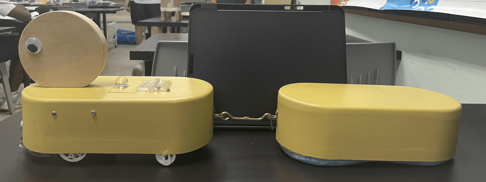
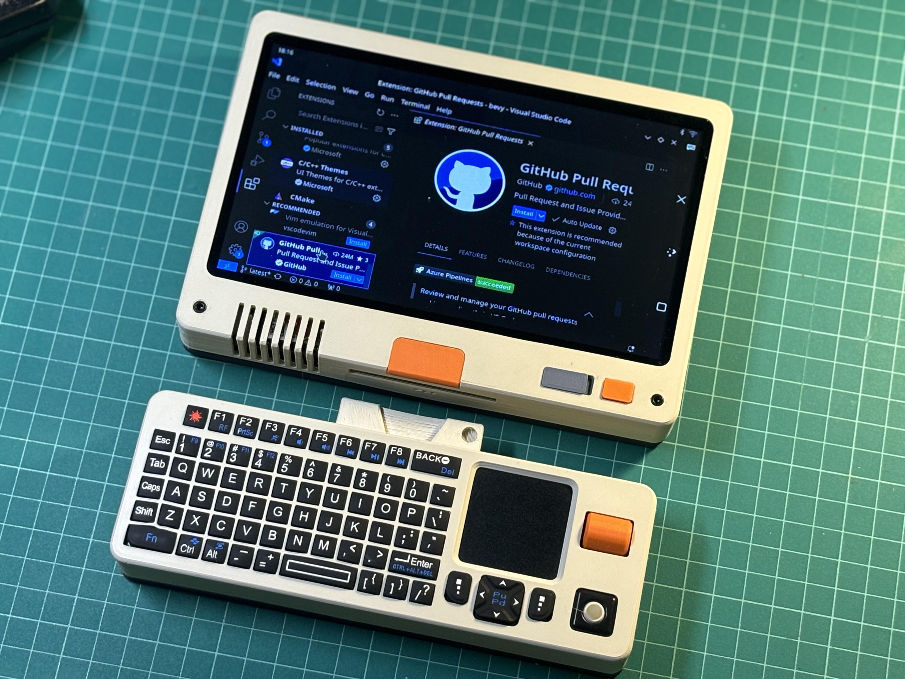
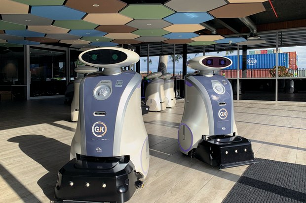
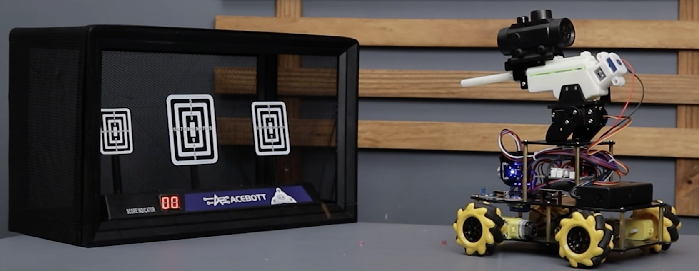
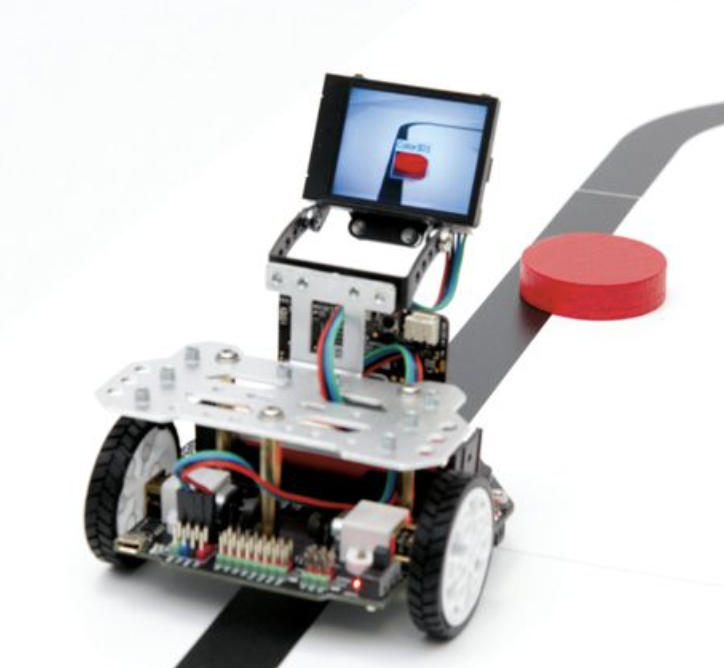

Scoll Down
keyboard_double_arrow_downRemote-Controlled CuteBot Pro Robot
Preview: Our team placed 1st in the RoboSoccer challenge!
Location: Singapore Polytechnic Arena
Fast reflexes, smart coding, and lots of testing helped us build a bot that could defend and score goals. Teams of 3 wireless bots chase a ball around a big-sized arena with the aim of kicking more goals than the opponent. This game gives the opportunity for youngsters to solve robotic challenges and build creative bots while learning science, technology, engineering, and math. The most rewarding part of designing bots is that students have fun and work together as a team, and learning occurs as naturally as breathing air.
14 June 2024
09:00
Maze-Solving Maqueen Pro Robot

Created a robot bot to autonomously move by following the lines on the floor and avoid objects in front of it. The robot is equipped with a mop to clean the floor dry. It uses sensors to detect the lines and obstacles, and it can navigate through a maze-like environment. This project showcases our skills in robotics, programming, and problem-solving. We used the Maqueen Pro robot platform, which is designed for educational purposes and allows us to easily build and program robots.
Raspberry Pi and Pi HAT: The Tiny Computer Behind Our Robots

Turns our robots into mini-computers.
The Raspberry Pi is a small but powerful computer that fits in your palm. We use it in our robotics projects to run code, control motors, and process sensor data. When paired with Pi HATs (add-on boards that stack on top), we can easily add features like motor control, sensors, camera vision, and more — no messy wires needed! With the Raspberry Pi, our robots can think, see, and even learn.
Our goal in 2024

Create 7 cleaning bots that can assist cleaners with cleaning the 7 different schools in NYP
Obstacle avoidance using ultrasonic sensors or LiDAR. Voice command or mobile app control for staff. Cleaning modes: vacuum, mop, UV, or air-purifier. Self-docking & charging. Real-time route optimization based on foot traffic data. Autodetection of stair cases and humans so that won't collide and spoil. Can send cleaning reports or alert staff if extra attention is needed.
Explore the Acebott DIY Smart Car Kit!

From the invention of army tanks, we decided to build and upgrade our Acebott DIY with a Shooting Car Expansion Pack
This advanced kit features Mecanum wheels, 4-wheel drive, and app control, along with exciting functions like obstacle avoidance, line following, and follow mode. We've even upgraded it with the Shooting Car Expansion Pack — transforming it into a mini Orbeez-firing tank for the ultimate robotics experience! 😎
Obstacle Avoidance Bot
